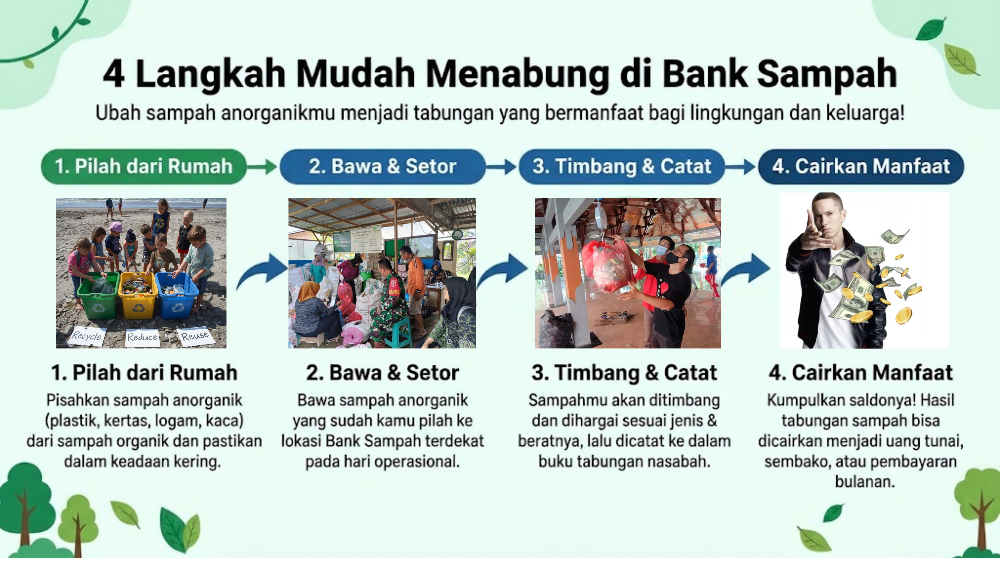
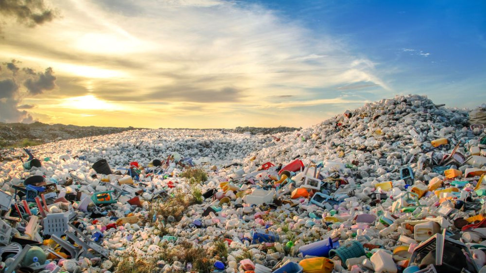

Mengenal Peran Komunitas & Fasilitas Sampah
Pengelolaan sampah dari rumah akan jauh lebih berdampak jika didukung oleh gerakan bersama di lingkungan sekitar kita. Melalui kolaborasi aktif, kita bisa mewujudkan lingkungan yang sehat, bebas sampah, dan berkelanjutan.

Operasional TPS3R & Gotong Royong
Apa itu TPS3R??
TPS3R adalah tempat pengumpulan sampah rumah tangga yang dikelola melalui pemilahan, pengolahan sampah organik menjadi kompos, dan pengumpulan barang daur ulang. Hanya sampah yang tidak dapat diolah yang dikirim ke TPA.

Apa itu Gotong Royong??
Gotong royong merupakan nilai luhur bangsa Indonesia yang diwariskan secara turun-temurun. Gotong royong adalah kegiatan yang dilakukan secara sukarela tanpa mengutamakan kepentingan pribadi. Menurut KBBI, gotong royong berarti bekerja bersama-sama, tolong-menolong, dan bantu-membantu.